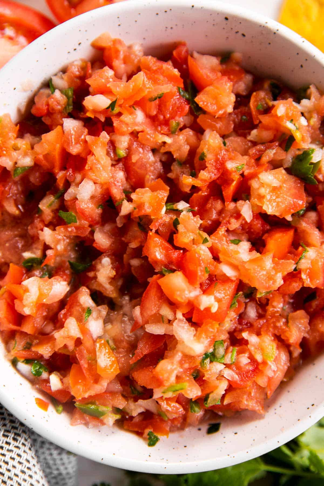

Salsa

Ingredients
- Cilantro
- Jalapenos
- Olive Oil
- Cumin
- Salt
- Lime Juice
- Garlic
- White Onions
- Roma Tomatoes
Steps
- Start by pulsing the onion and garlic in your food processor 2-4 times, until chopped. Doing this helps to properly chop the onion without overprocessing the tomatoes later.
- Next, add all remaining ingredients to the food processor.
- Pulse until your salsa has your preferred consistency – I usually pulse around 6 times.